Hoy os dejo un pequeño tutorial sobre cómo crear vídeos con Lumen5. Su mayor ventaja es que genera rápidamente vídeos bastante profesionales a partir de texto. Es gratuito si no usas la IA para generar avatares y no superas los 5 vídeos al mes, con una duración máxima de 2 minutos.
En primer lugar, os dejo el vídeo que he creado en menos de 5 minutos:
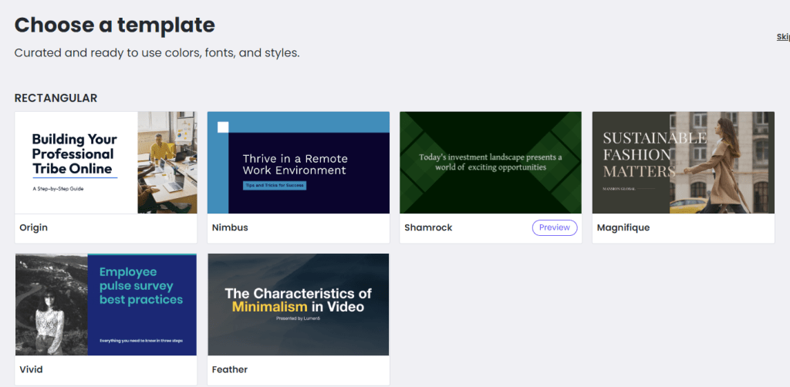
Eliges el formato del vídeo (16:9, 1:1, 9:16…).
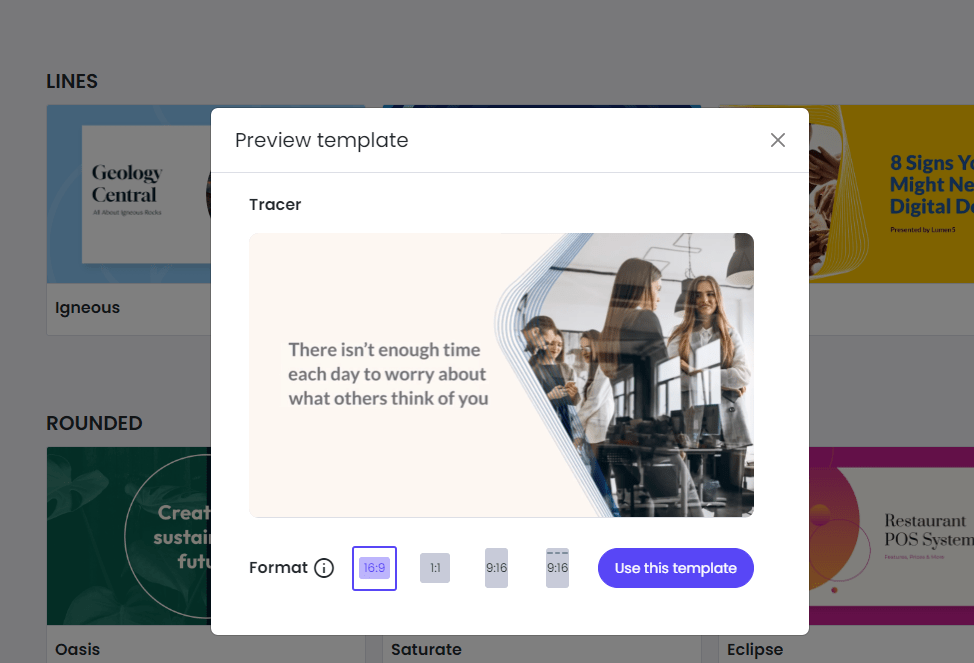
A continuación tienes que decidir a partir de qué quieres generar tu vídeo. Puedes partir de un texto o una idea (text on media), que te genere un vídeo narrado con IA (AI Voiceover), generar un avatar con IA (opción de pago), o grabarte tú mismo un audio (Voiceover) o un vídeo (Talking head) con lo que quieres contar y que el vídeo se genere a partir de ahí.
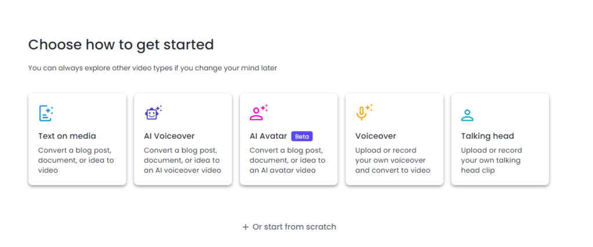
Previamente había generado un texto con ChatGPT para crear un vídeo para RiberPublic SLS, la empresa simulada del centro donde trabajo ahora, y lo añadí con la opción PASTE TEXT.
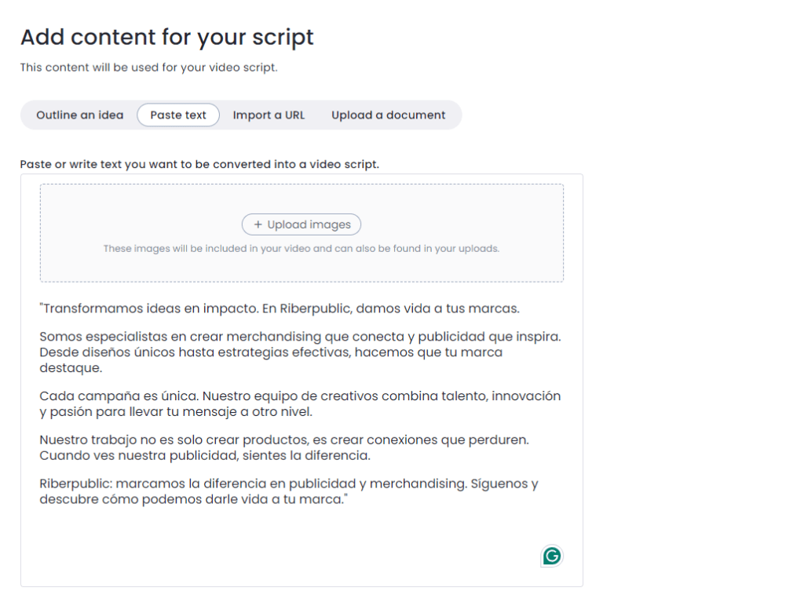
En este punto la inteligencia artificial te genera un script para el vídeo, te indica una duración aproximada y te señala qué información va a destacar por escrito a lo largo del vídeo (spin-offs). Todo esto es modificable. Si vas a elegir la opción de generación de voz o vídeo por IA, te recomiendo que el texto esté escrito como quieres que suene. Por ejemplo, si pones «merchandising» en español, lo va a pronunciar tal cual en lugar de «merchandaising». Si quiero que pronuncie RiberPublic adecuadamente, tengo que poner un acento en la u: «RiberPúblic».
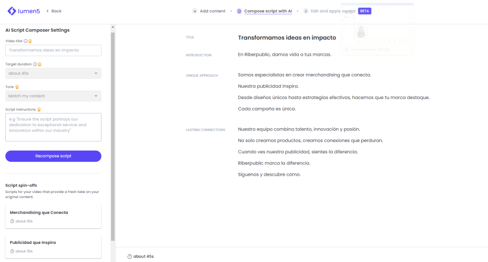
Si le damos a continuar, ya nos genera el vídeo, que podemos editar de varias maneras. En primer lugar, podemos elegir aplicar la paleta de colores de nuestra marca (opción de pago).
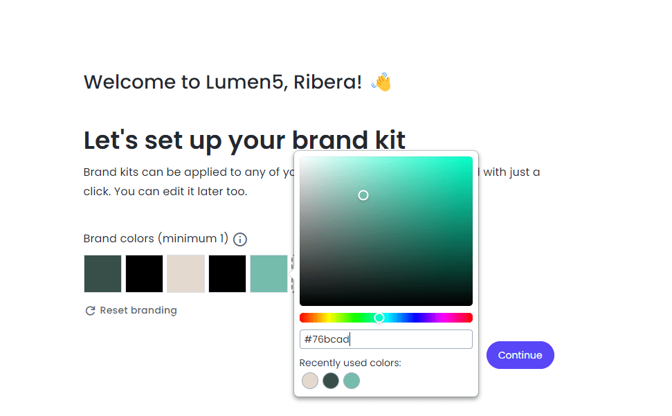
También se puede cambiar el diseño de cada diapositiva del vídeo, en SWAP DESIGN.
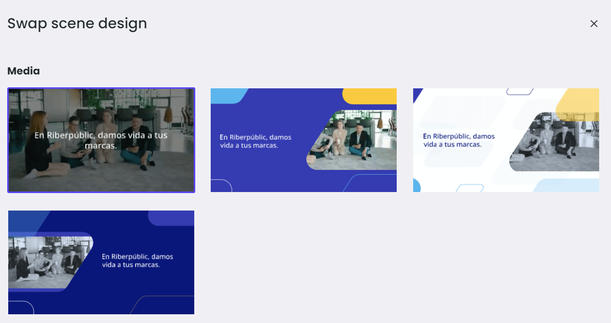
Si no te gusta el vídeo que ha seleccionado la IA, puedes cambiarlo por otro escribiendo en el buscador una o varias palabras clave. Solo hay que cogerlo con el ratón y soltarlo sobre la diapositiva que queremos modificar.
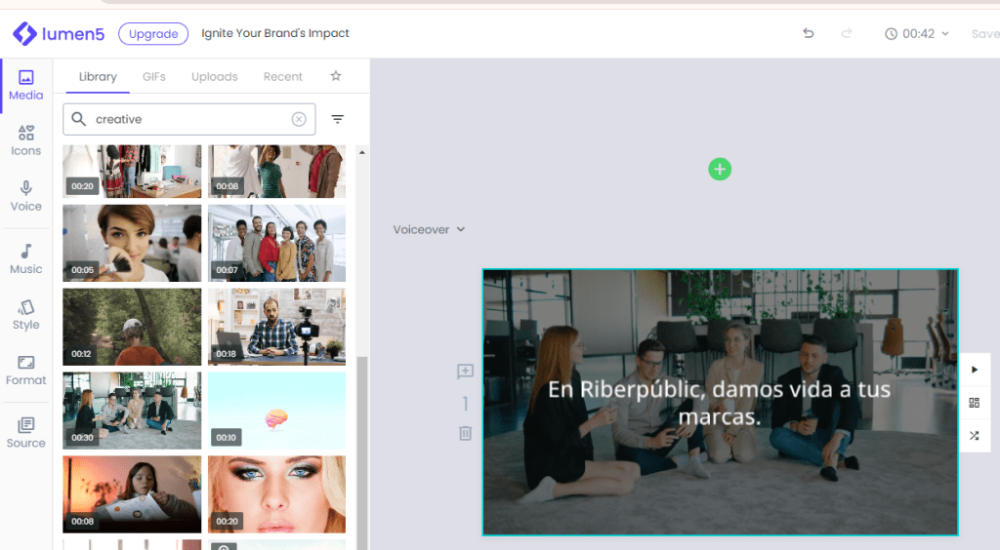
Y se puede aplicar la paleta de colores que hemos creado antes en APPLY BRAND KIT (opción de pago).
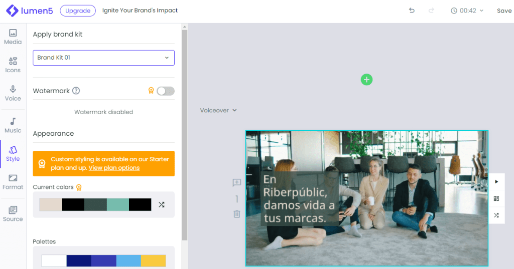
Además, se pueden añadir más escenas, y si se selecciona ADD desde el texto, se inserta la escena de vídeo con el texto que se desee.
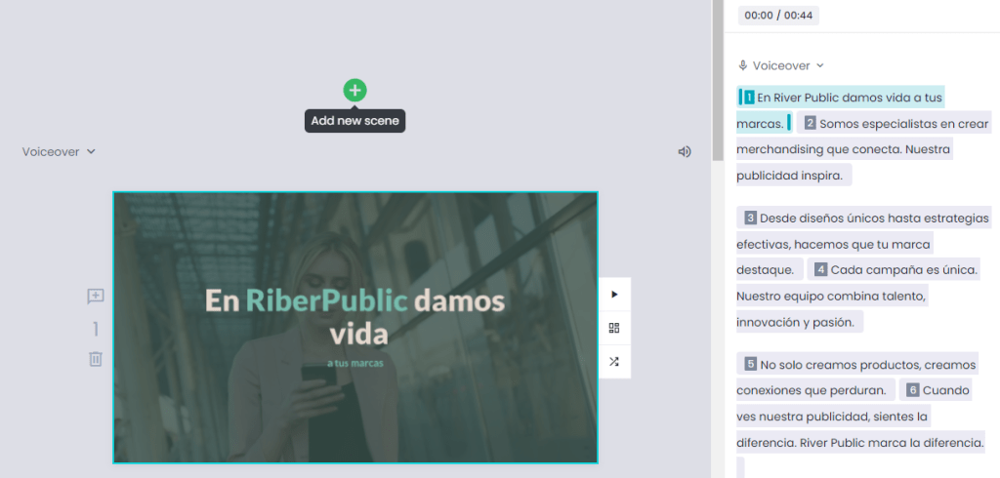
Cosas a tener en cuenta: te deja usar las opciones de pago —yo he probado el generador de IA y el brand kit— y solo cuando vas a publicar te informa de que son opciones de pago y que no puedes hacerlo sin contratar un plan, así que tenedlo en cuenta.
A mí personalmente no me gustan mucho las voces de IA gratuitas, son demasiado mecánicas, así que prefiero subir mis propios audios, cosa que también permite la herramienta, incluso usando un prompter. Para esta opción, usa VOICEOVER antes de crear el vídeo.
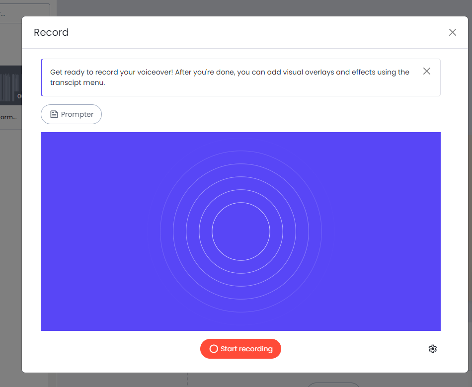
La herramienta permite compartir un enlace con el vídeo y también descargarlo, y editándolo en Canva podría quitarse la marca de agua que aparece al final en la opción gratuita.
Estoy deseando ver vuestras creaciones con esta herramienta, increíble por su rapidez y eficacia.